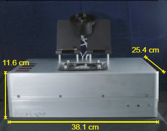
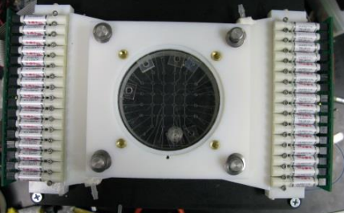
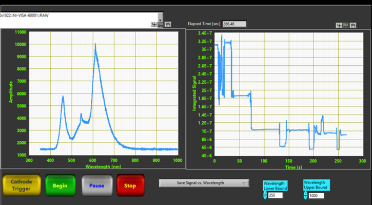
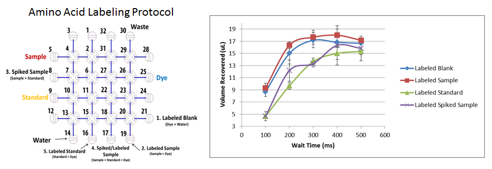
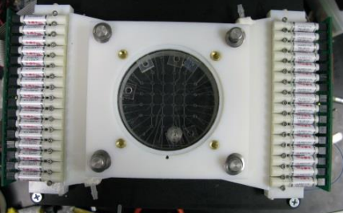
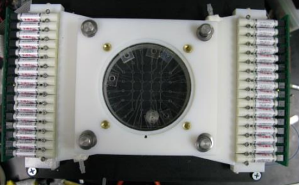
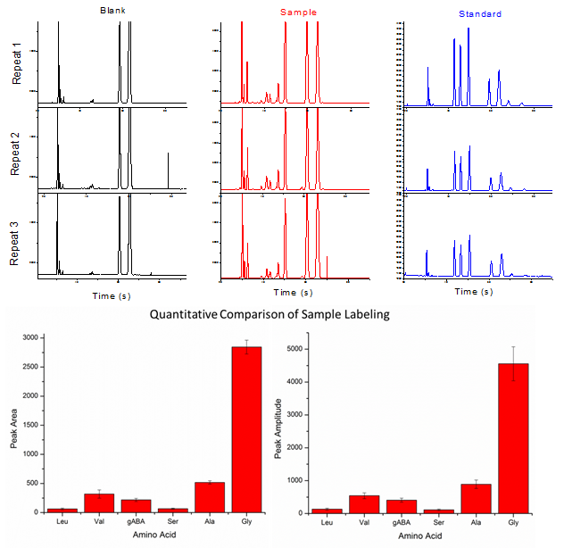
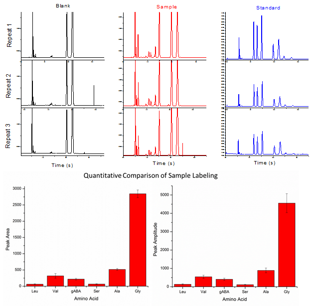
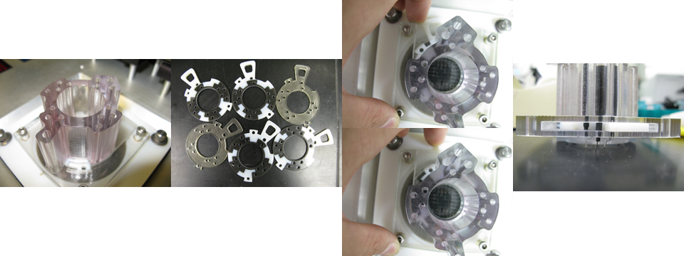
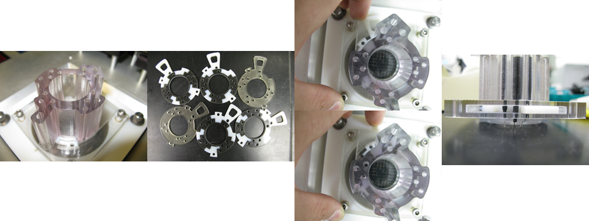

The Chemical Laptop, co-engineered with Los Gatos Research, is the first portable, reprogammable, battery-operated, microchip capillary electrophoresis(µCE) system. Using microfluidic technology and miniaturized components, it allows for high-precision chemical analyses on microliter samples. The instrument is lightweight and battery-powered, so these analyses can be performed on site, in the field. In short, the instrument operates as follows:
1. A liquid sample is introduced to the instrument and processed with a series of buffers, pH indicators, acids, bases, standards, and fluorescent labeling dyes. These reagents allow for on-chip sample derivatization, mixing, dilution, and pH adjustment.
2. The processed sample is then exported to a high voltage, electrophoretic micro-channel where it is separated into components differing in mass and charge.
3. As these components migrate down the channel, dye-labeled constituents are excited by a laser and detected by a UV-vis spectrometer. Excitation and fluorescence emission are filtered by a series of bandpass and dichroic filters.
4. Lastly, detection signal is visualized and processed with LabVIEW software on a tablet computer mounted atop the instrument.


The first prototype was completed in May 2013, about a week before my arrival. The objective of my work that summer was to test and characterize the newly developed prototype, and prepare the instrument for a completely automated, end-to-end field analysis. This required several modifications to its existing hardware and software, and the development of new hardware and software.
1. Revised software to reduce complexity of spectral data and optimize automated sample processing cycles.
2. Software development allowing for automated, on-chip colorimetric determination and adjustment of sample pH.
3. Explored a variety of fabrication methods, materials, and post-fabrication procedures to develop a lightweight, air-tight, pneumatic manifold resistant to deformation under high pressure.
4. Designed a simple mounting system and installed a USB microscope for automated colorimetric pH control and remote observation.
5. Prototyped miniature, modular, refillable cartridges for easily storing and dispensing sets of reagents to the instrument.
Software Revisions
Simplification of Spectral Data
The Chemical Laptop arrived at our lab with software developed by Los Gatos Research allowing for real-time observation of the spectrometer's measured signal across its entire wavelength range. Since the program recorded signal for 3648 wavelengths every 50ms, its output files quickly became very large. For example, the output data for a 15s measurement was a 3648 x 300 array with a file size of 5.7MB. Along with unnecessary memory costs, the size of these files made data analysis and file transfer inconvenient.
I developed two solutions to this problem. First, I modified the existing software so that the output data could be truncated to a user-specified wavelength range. Second, I modified the software to allow for real-time observation of the integrated signal over the user-specified wavelength range.

The revised observation interface is shown above. On the lower right are two controls which allow the user to select a wavelength range for analysis. The plot on the left displays emission vs. wavelength within the specified range in real-time. The plot on the right displays the integrated emission signal within the specifed wavelength range as a function of time. Below, there is a drop down menu which allows the user to save the data from either/both of the plots.
Optimization of Existing Labeling Protocols
Since our microfluidic chips are manually assembled, each chip differs in certain qualities like fluidic resistance. Whenever a new chip is assembled, the optimum wait time between valve actuations must be characterized. At long waiting times between valve actuations, the valves open and close completely, and therefore shorter waiting times results in faster fluidic transfer. At short waiting times, the membrane has inadequate time to fully deflect, and therefore does not open or close completely, leading in a reduction in the amount of fluid transferred per pumping iteration and thus slower fluidic transfer. Therefore, a careful optimization was required to determine the optimal waiting time to balance these contradictory effects.

Shown above on the left is a typical labeling protocol. On the right is a plot of volume recovery vs. wait time for each of the processes in the labeling protocol. The highest volume recovered from storage reservoirs after analysis was noted at 400ms; however, these values show a certain amount of inconsistency. With a wait time of 500ms, similar volumes (albeit slightly lower) were recorded with a much greater consistency across reservoirs and trial runs. For these reasons, a waiting time of 500ms was used for future labeling protocols.
Here is a video of the labeling protocol, with food coloring used to represent samples/reagents. You will see each of the steps outlined in the previous figure. In between each step is a rinse cycle to clear leftover reagents in the processing chip before the next step.
 
The first prototype was completed in May 2013, about a week before my arrival. The objective of my work that summer was to test and characterize the newly developed prototype, and prepare the instrument for a completely automated, end-to-end field analysis. This required several modifications to its existing hardware and software, and the development of new hardware and software.

The first prototype was completed in May 2013, about a week before my arrival. The objective of my work that summer was to test and characterize the newly developed prototype, and prepare the instrument for a completely automated, end-to-end field analysis. This required several modifications to its existing hardware and software, and the development of new hardware and software. 


 
